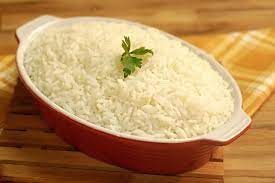

White Rice

Description
The white rice recipe is simple and classic. Rice is a versatile side dish and can be used in a variety of preparations.
Ingredients
- Olive oil
- 1 crushed garlic clove
- 2 cups of boiled water
- A half chopped onion
- 1 cup of rice
- Salt
Steps
- Saute the garlic and onio in olive oil;
- Add the rice and fry for about 30 seconds;
- Add the boiling water and salt;
- Lower the heat and cook until the water is almost gone;
- Cover the pan and wait about 20 minutes before serving.